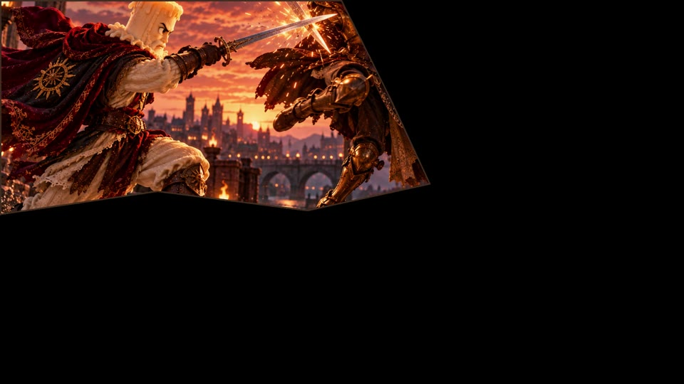
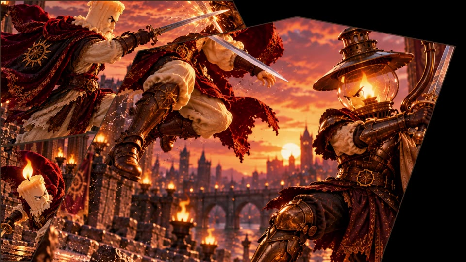

01
OpenAI
A API externa demonstrada gera imagens por texto ou referência, cria voz e transforma áudio em legendas.
 VERSÃO ESSENCIAL ↗
VERSÃO ESSENCIAL ↗Com os mapas e as regras do Reagência, uma IA pode criar a montagem em um arquivo JSON.
Depois, o editor abre o projeto para conferir, ajustar e exportar normalmente.
Cenas, ritmo e movimentos desejados.
Regras do editor e endereços dos arquivos.
A montagem e as mídias ficam vinculadas.
Você confere e dá o acabamento.

Com a música pronta e as imagens escolhidas, o usuário descreveu a edição. O ChatGPT seguiu os mapas e as regras do Reagência e entregou o projeto JSON.


O usuário descreve a operação. O ChatGPT organiza recortes, posições e movimentos no projeto.
Cada imagem começa ampliada e se acomoda no seu lugar. As anteriores permanecem visíveis.
O potencial do Reagência está em transformar intenção em ação: uma pessoa pode criar sem dominar cada ferramenta, enquanto quem já domina ganha liberdade para delegar o trabalho repetitivo.
As integrações já validadas demonstram o conceito e abrem caminho para novas conexões e possibilidades de criação.
Com Reagência, você é o maestro do seu editor.